library(SOmap) #> Loading required package: raster #> Loading required package: sp # lonrange, latrange # lonvec, latvec # sp, sf object # raster, stars object # file set.seed(1) SOmap_auto()
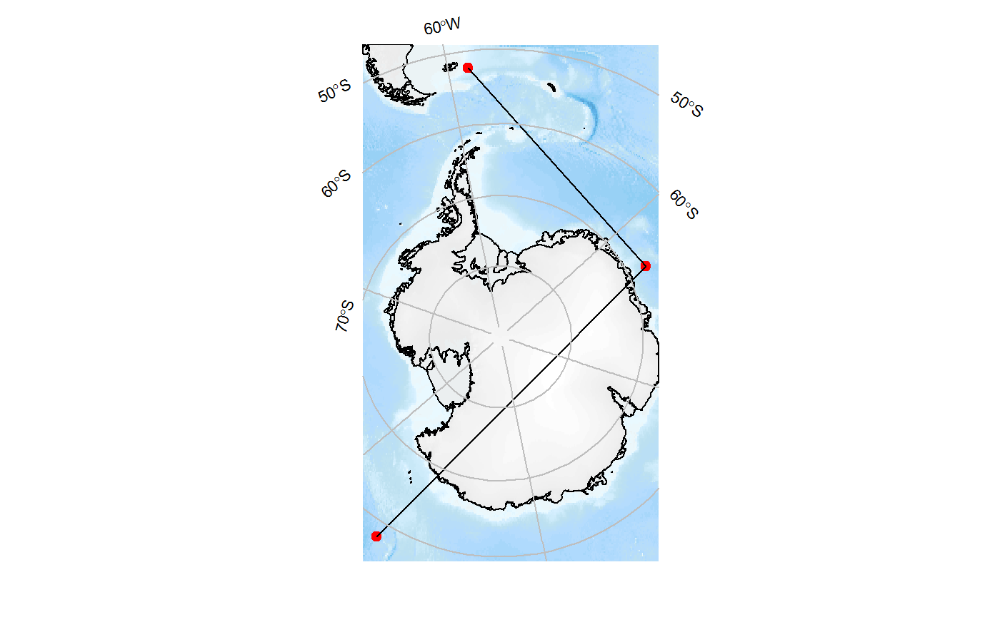
SOmap_auto(target = "+proj=laea +lat_0=-20 +ellps=WGS84") #> Warning in showSRID(uprojargs, format = "PROJ", multiline = "NO"): Discarded #> datum Unknown based on WGS84 ellipsoid in CRS definition #> Warning in showSRID(uprojargs, format = "PROJ", multiline = "NO"): Discarded #> datum Unknown based on WGS84 ellipsoid in CRS definition #> Warning in showSRID(uprojargs, format = "PROJ", multiline = "NO"): Discarded #> datum Unknown based on WGS84 ellipsoid in CRS definition #> Warning in showSRID(uprojargs, format = "PROJ", multiline = "NO"): Discarded #> datum Unknown based on WGS84 ellipsoid in CRS definition #> Warning in showSRID(uprojargs, format = "PROJ", multiline = "NO"): Discarded #> datum Unknown based on WGS84 ellipsoid in CRS definition
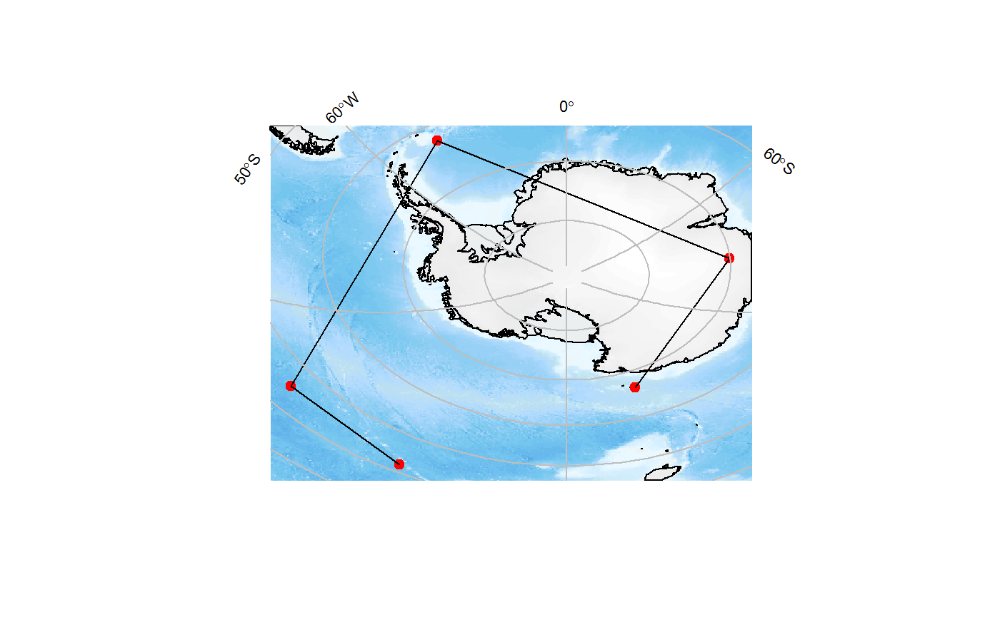
llx <- c(100, 120) lly <- c(-60, -30) SOmap_auto(llx, lly)
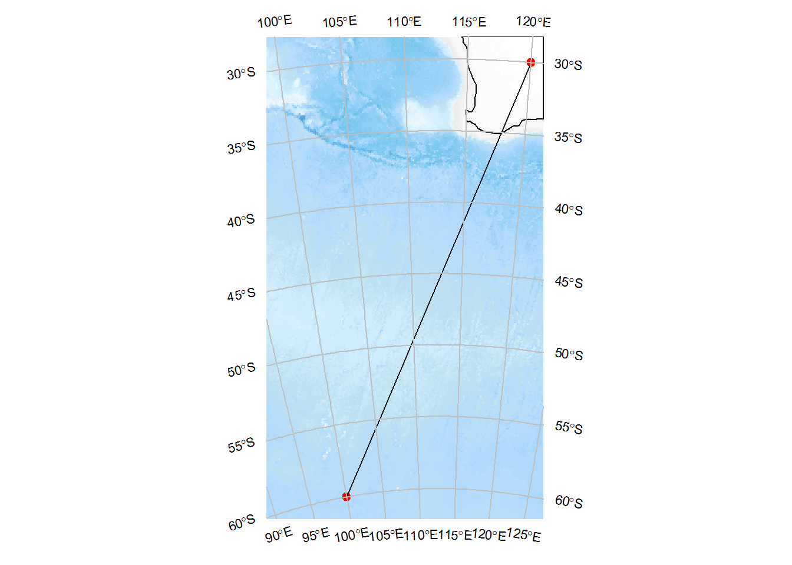
SOmap_auto(llx, lly, target = NULL)
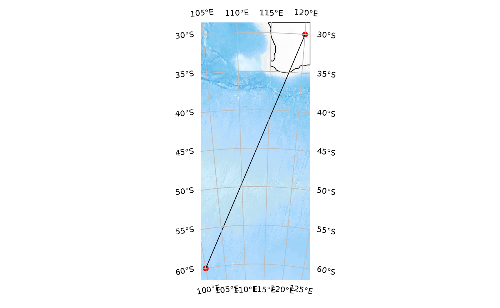
SOmap_auto(cbind(llx, lly), target = NULL)
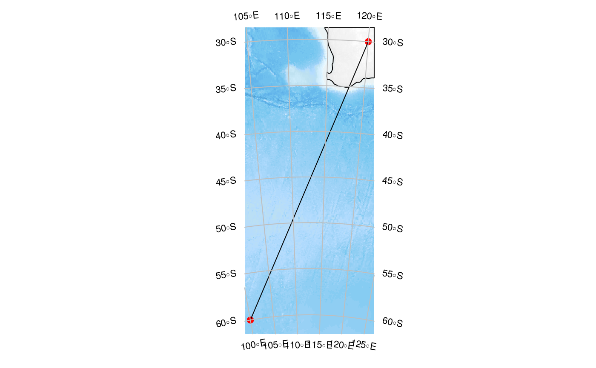
SOmap_auto(SOmap_data$mirounga_leonina$lon, SOmap_data$mirounga_leonina$lat, target = "laea")
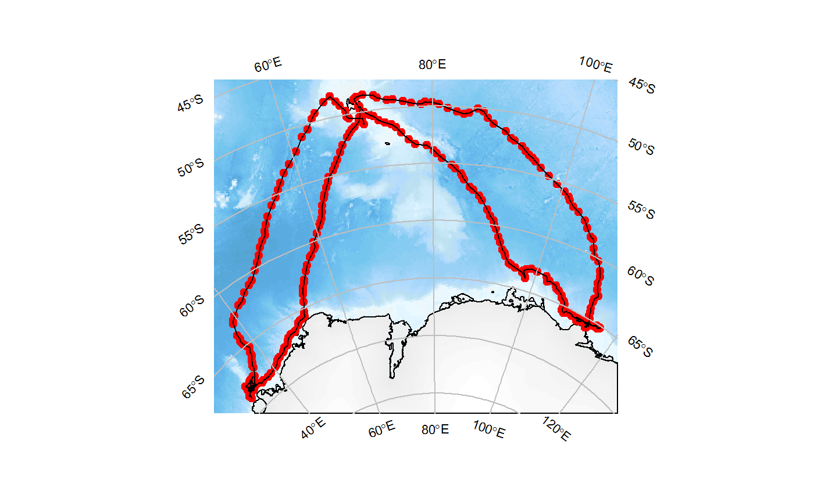
SOmap_auto(SOmap_data$mirounga_leonina$lon, SOmap_data$mirounga_leonina$lat, centre_lon = 147)
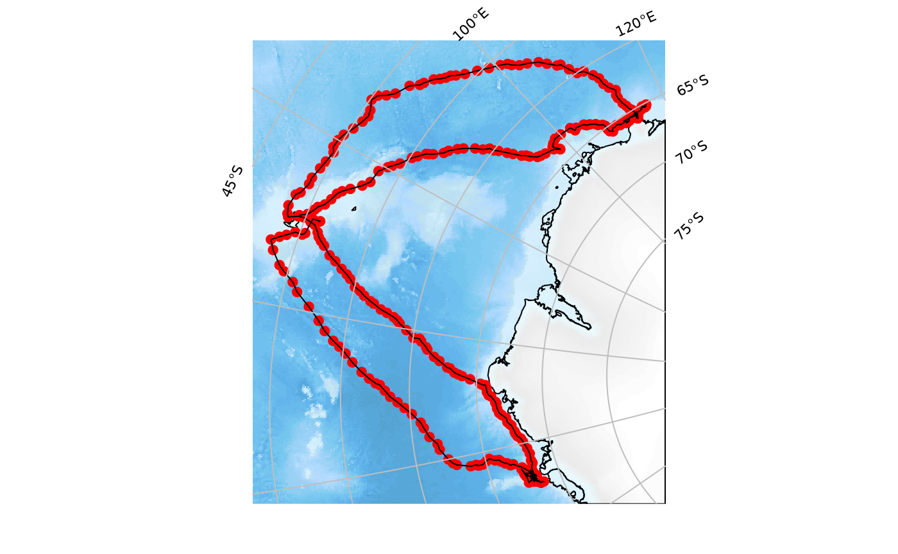
SOmap_auto(SOmap_data$mirounga_leonina$lon, SOmap_data$mirounga_leonina$lat, target = NULL)

SOmap_auto(ice) #> Warning in showSRID(uprojargs, format = "PROJ", multiline = "NO"): Discarded datum Unknown based on WGS84 ellipsoid in CRS definition, #> but +towgs84= values preserved #> Warning in showSRID(uprojargs, format = "PROJ", multiline = "NO"): Discarded datum Unknown based on WGS84 ellipsoid in CRS definition, #> but +towgs84= values preserved #> Warning in showSRID(uprojargs, format = "PROJ", multiline = "NO"): Discarded datum Unknown based on WGS84 ellipsoid in CRS definition, #> but +towgs84= values preserved
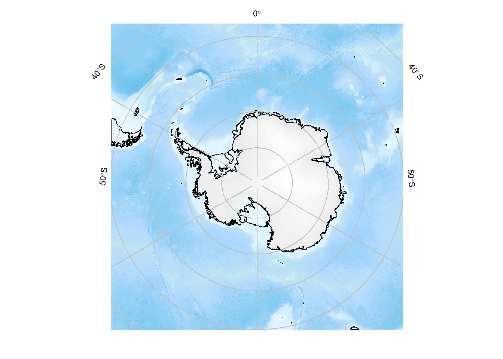
SOmap_auto(ice, target = "laea", centre_lon = 147, centre_lat = -42) SOplot(ice, col = palr::icePal(100))
SOmap_auto(ice, centre_lon = 147, centre_lat = -42) #> Warning in showSRID(uprojargs, format = "PROJ", multiline = "NO"): Discarded datum Unknown based on WGS84 ellipsoid in CRS definition, #> but +towgs84= values preserved #> Warning in showSRID(uprojargs, format = "PROJ", multiline = "NO"): Discarded datum Unknown based on WGS84 ellipsoid in CRS definition, #> but +towgs84= values preserved #> Warning in showSRID(uprojargs, format = "PROJ", multiline = "NO"): Discarded datum Unknown based on WGS84 ellipsoid in CRS definition, #> but +towgs84= values preserved SOplot(ice, col = palr::icePal(100)) #> Warning in showSRID(uprojargs, format = "PROJ", multiline = "NO"): Discarded datum Unknown based on WGS84 ellipsoid in CRS definition, #> but +towgs84= values preserved #> Warning in wkt(pfrom): CRS object has no comment #> Warning in rgdal::rawTransform(projfrom, projto, nrow(xy), xy[, 1], xy[, : Using #> PROJ not WKT2 strings #> Warning in showSRID(uprojargs, format = "PROJ", multiline = "NO"): Discarded datum Unknown based on WGS84 ellipsoid in CRS definition, #> but +towgs84= values preserved #> Warning in wkt(projfrom): CRS object has no comment #> Warning in wkt(pfrom): CRS object has no comment #> Warning in rgdal::rawTransform(projfrom, projto, nrow(xy), xy[, 1], xy[, : Using #> PROJ not WKT2 strings #> Warning in rgdal::rawTransform(projto_int, projfrom, nrow(xy), xy[, 1], : Using #> PROJ not WKT2 strings #> Warning: 'palr::icePal' is deprecated. #> Use 'ice_pal' instead. #> See help("Deprecated")
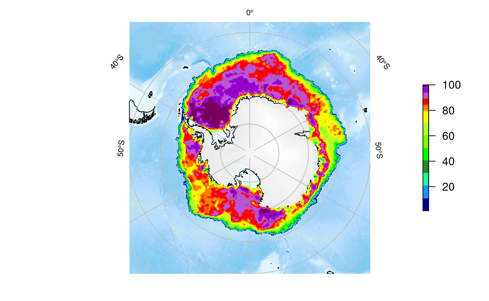
SOmap_auto(ice, target = "merc", centre_lon = 147, centre_lat = -42) #> Warning in showSRID(uprojargs, format = "PROJ", multiline = "NO"): Discarded datum WGS_1984 in CRS definition, #> but +towgs84= values preserved SOplot(ice, col = palr::icePal(100)) #> Warning in wkt(pfrom): CRS object has no comment #> Warning in rgdal::rawTransform(projfrom, projto, nrow(xy), xy[, 1], xy[, : Using #> PROJ not WKT2 strings #> Warning in wkt(projfrom): CRS object has no comment #> Warning in wkt(pfrom): CRS object has no comment #> Warning in rgdal::rawTransform(projfrom, projto, nrow(xy), xy[, 1], xy[, : Using #> PROJ not WKT2 strings #> Warning in rgdal::rawTransform(projto_int, projfrom, nrow(xy), xy[, 1], : Using #> PROJ not WKT2 strings #> Warning: 'palr::icePal' is deprecated. #> Use 'ice_pal' instead. #> See help("Deprecated")
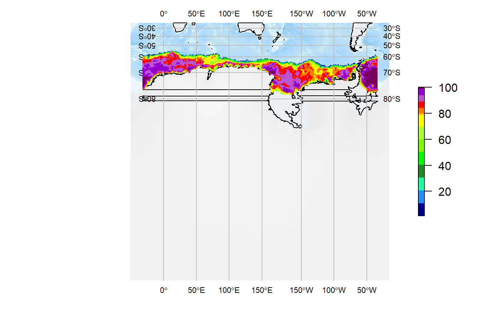
SOmap_auto(x=c(10,60), y=c(-40,-70))
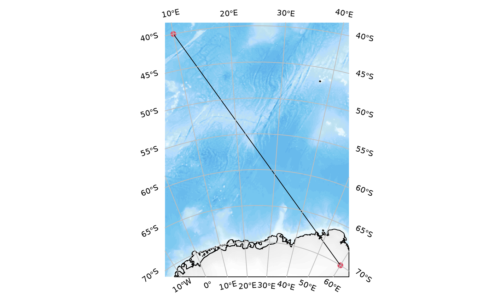
SOmap_auto(x=c(10,60), y=c(-40,-70), trim_background = FALSE) #> Warning in SOmap_auto(x = c(10, 60), y = c(-40, -70), trim_background = FALSE): #> 'trim_background' argument to SOmap() is defunct
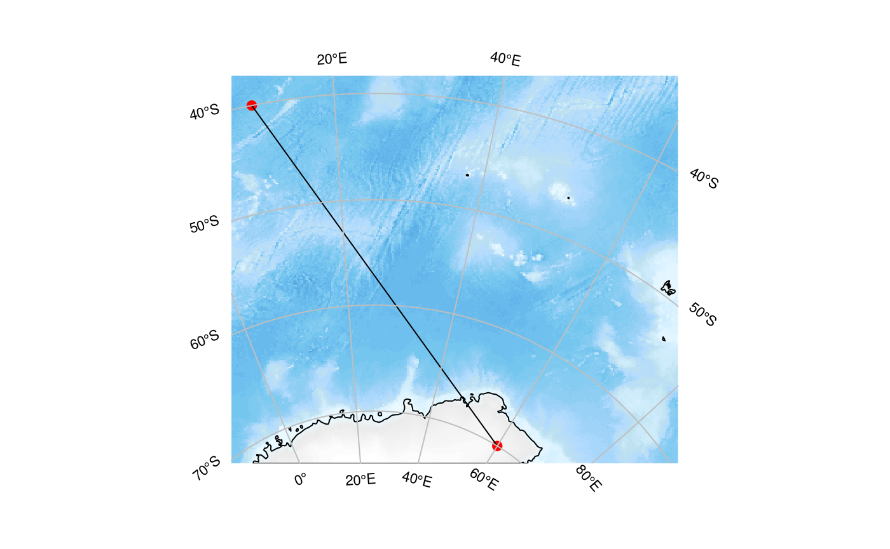
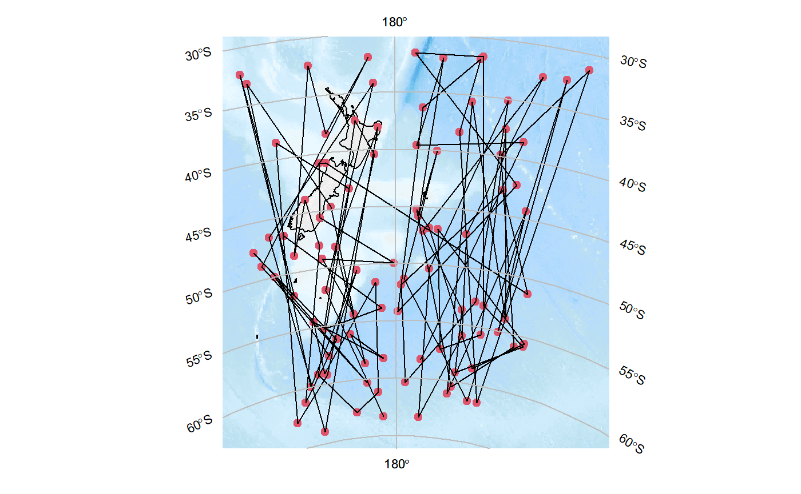
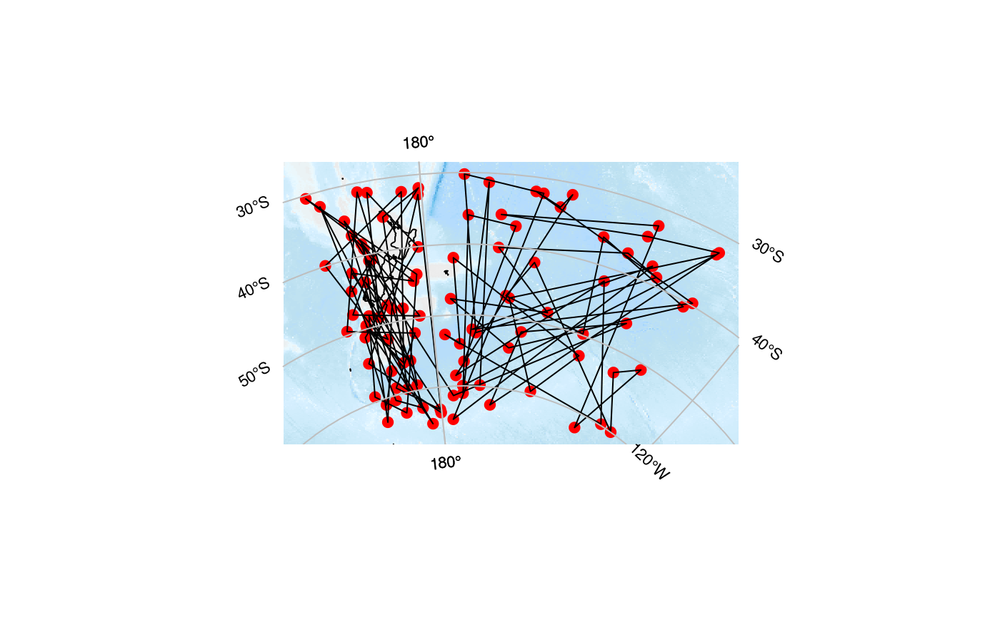
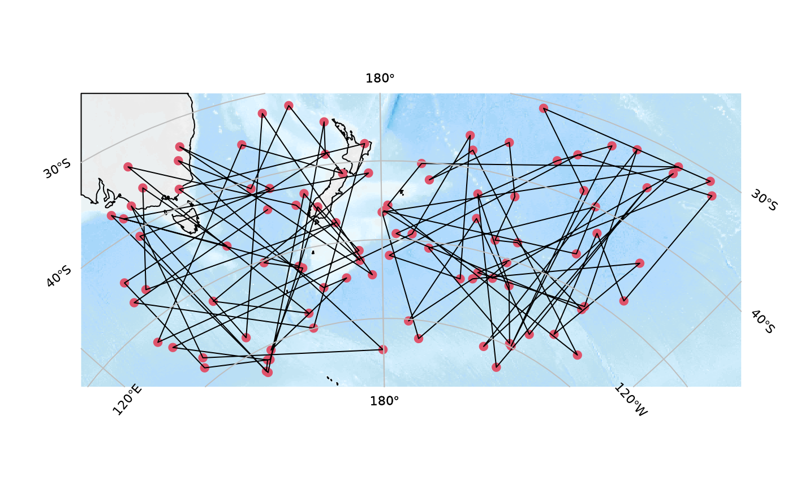
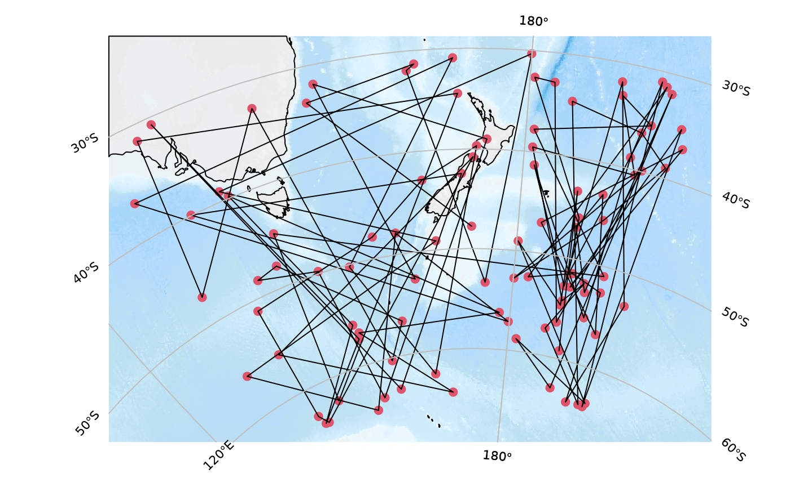
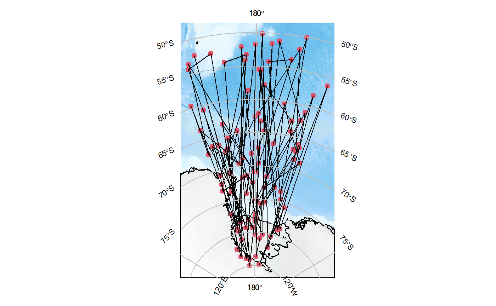
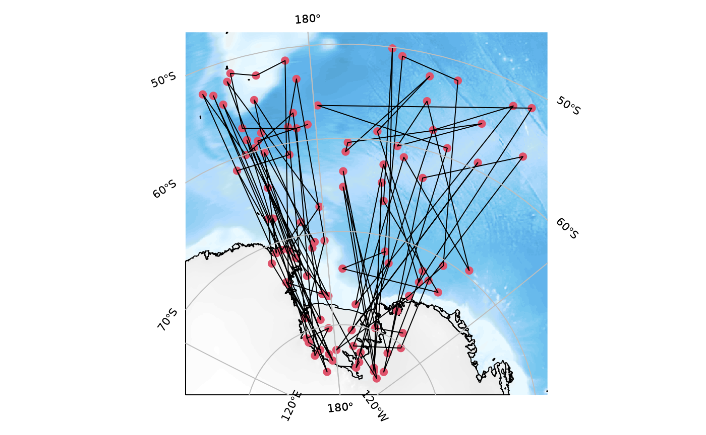
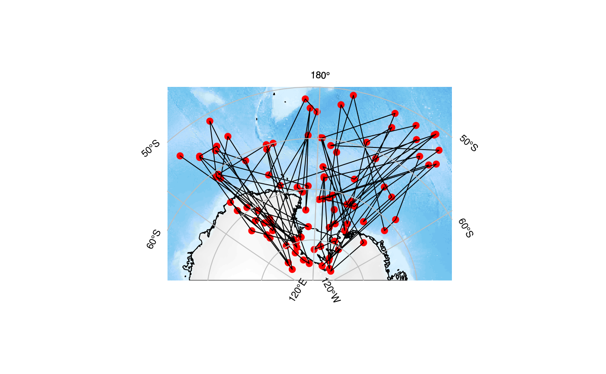
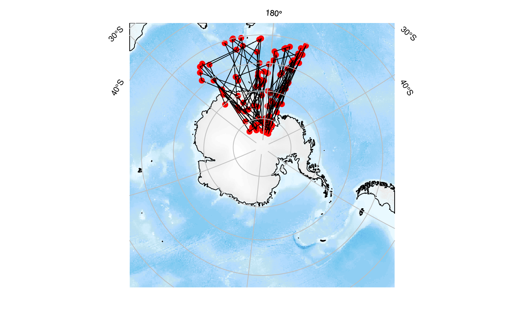
Handle missing values in input data.
temporarily turn this off …
data("albatross", package = "adehabitatLT") ## convert the albatross data to a single matrix of lon, lat points albatrack <- do.call(rbind, lapply(albatross, function(z) rgdal::project(rbind(as.matrix(z[, c("x", "y")]), NA), "+proj=utm +zone=42 +south +datum=WGS84", inv = TRUE))) ## construct the map and return it, but don't plot it alb_map <- SOmap_auto(albatrack[, 1], albatrack[, 2]) alb_map